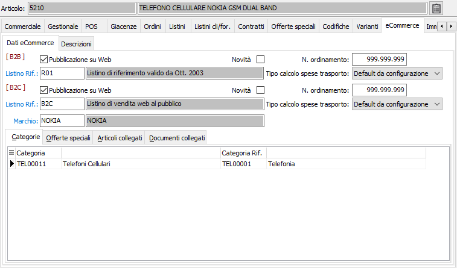
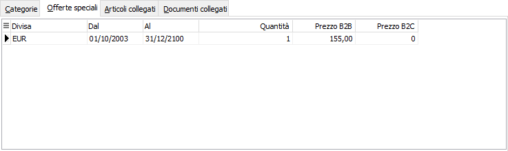
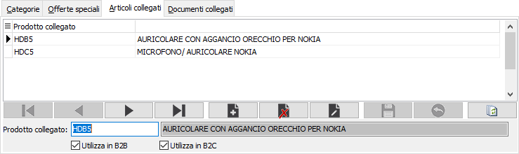
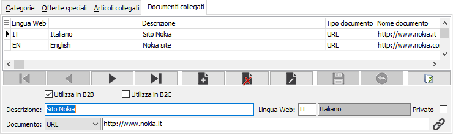
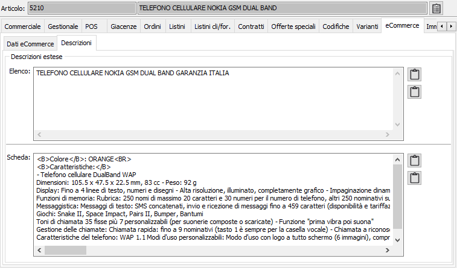

eCommerce
La sezione video è attiva solo in presenza di un modulo "eCommerce". La finestra è divisa in due pagine: una relativa ai dati eCommerce ed una relativa alle descrizioni. La pagina dei dati eCommerce è divisa in due sezioni, la sezione superiore contiene i dati relativi al prodotto su Web, la sezione sottostante è divisa in quattro pagine su cui compaiono tutti i dati relativi alla gestione eCommerce collegati al prodotto corrente.
Se presenti entrambi i moduli eCommerce (B2B e B2C) la parte superiore della pagina dati eCommerce è divisa in due sezioni, una per ogni modulo eCommerce presente, dove inserire i dati.

PUBBLICAZIONE SU WEB: definisce se il prodotto corrente deve essere visibile su web (casella con segno di spunta).
NOVITÀ: definisce se su web il prodotto deve essere segnalato come una novità (casella con segno di spunta).
N. ORDINAMENTO: numero d'ordine utilizzato per determinare l'ordinamento dei dati nella pagina web relativa all'elenco prodotti.
MARCHIO: codice alfanumerico di 3 caratteri che identifica il marchio associato al prodotto; se presente compare nella scheda del prodotto su web. Sul campo sono attive le funzioni di ricerca (F9) e manutenzione (CTRL+W) sulla tabella stessa.
TIPO CALCOLO SPESE DI TRASPORTO: definisce il metodo di calcolo delle spese di trasporto per il prodotto attivo; valori possibili:
in base alla configurazione;
in base agli imballi;
in base al peso;
in base al volume (cm. cubi).
LISTINO RIF.: codice alfanumerico di 3 caratteri che identifica il listino di riferimento per il prezzo base del prodotto. Sul campo sono attive le funzioni di ricerca (F9) e manutenzione (CTRL+W) sulla tabella stessa.
La pagina comprende la sezione categorie dove sono visualizzate le categorie eCommerce a cui è collegato l'articolo corrente, per maggiori informazioni si rimanda al capitolo relativo alle Categorie eCommerce. Con il doppio clic del mouse si accede direttamente alla manutenzione dei dati visualizzati.
Linguetta offerte speciali
La sezione visualizza le offerte speciali eventualmente presenti per l'articolo corrente, per maggiori informazioni si rimanda al capitolo relativo alle Offerte speciali eCommerce. Con il doppio clic del mouse si accede direttamente alla manutenzione dei dati visualizzati.
Se presenti entrambi i moduli eCommerce (B2B e B2C) saranno visualizzate le colonne del prezzo relative ad ogni modulo.

Linguetta articoli collegati
La sezione visualizza e consente l'inserimento e la cancellazione di eventuali articoli collegati al prodotto corrente; su web questi articoli saranno visualizzati come collegamenti ai prodotti stessi, nella scheda del prodotto.
Se presenti entrambi i moduli eCommerce (B2B e B2C) saranno visualizzati due check box per indicare per quale modulo l'articolo è collegato (casella con segno di spunta per collegato, casella vuota per non collegato).

Linguetta documenti collegati
La sezione visualizza e consente l'inserimento e la cancellazione di eventuali documenti collegati al prodotto corrente; su web questi documenti saranno visualizzati come collegamenti, nella scheda del prodotto.
Se presenti entrambi i moduli eCommerce (B2B e B2C) saranno visualizzati due check box per indicare per quale modulo il documento è collegato (casella con segno di spunta per collegato, casella vuota per non collegato).

DESCRIZIONE: descrizione del collegamento che compare su web.
LINGUA WEB: codice alfanumerico di 2 caratteri che identifica la lingua web per cui deve essere visualizzato il collegamento. Sul campo sono attive le funzioni di ricerca (F9).
PRIVATO: definisce se il collegamento deve essere visibile solo quando un utente è autenticato (casella con segno di spunta), oppure sempre.
DOCUMENTO: definisce il formato ed il nome del collegamento che sarà inserito su web; valori possibile: PDF, ZIP, URL. Nella casella di testo deve essere indicato il nome del file senza percorso, per PDF e ZIP, oppure l'indirizzo completo in caso di URL. Il pulsante accanto alla casella di testo è diverso in base al tipo di documento e consente di selezionare il file, per ZIP e PDF, oppure di visitare l'indirizzo in caso di URL.

DESCRIZIONE ESTESA ELENCO: campo memo che consente di specificare le caratteristiche sintetiche del prodotto che saranno visualizzate nell'elenco prodotti su web. I pulsanti consento la modifica dei dati in visualizzazione estesa e l'inserimento/modifica nelle varie lingue.
DESCRIZIONE ESTESA SCHEDA: campo memo che consente di specificare tutte le caratteristiche del prodotto che saranno visualizzate nella scheda su web. I pulsanti consento la modifica dei dati in visualizzazione estesa e l'inserimento/modifica nelle varie lingue.